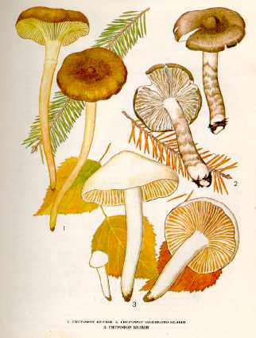

1. ГИГРОФОР БУРЫЙ. ГИГРОФОР ПОЗДНИЙ.
Встречается в хвойных лесах среди мхов и вереска
в сентябре-октябре. Растет группами.
Шляпка до
Мякоть нетолстая, белая или слегка желтоватая,
без особого вкуса и запаха.
Пластинки нисходящие по ножке, толстые, желтые или светло-желтые,
восковидные, редкие, у молодых грибов закрыты хлопьевидно-волокнистым покрывалом.
Споровый порошок белый. Споры яйцевидно-эллипсоидные.
Ножка до
Малоизвестный съедобный гриб. Употребляется в свежем, маринованном
и соленом виде, пригоден для сушки.
2. ГИГРОФОР ОЛИВКОВО-БЕЛЫЙ.
Встречается в хвойных, реже в лиственных лесах, в августе - сентябре.
Шляпка от 3 до
Пластинки редкие, широкие, белые или кремовые, нисходящие по ножке. Споровый порошок белый.
Ножка до
Малоизвестный съедобный гриб. Употребляется свежим.
3. ГИГРОФОР БЕЛЫЙ.
Встречается довольно часто поздней осенью в лиственных
и смешанных лесах с примесью березы. В урожайные годы растет большими колониями.
Шляпка 2—10 см в диаметре, сначала выпуклая, потом
распростертая, с широким бугорком, белая или кремовая, в сырую погоду слизистая,
в сухую — блестящая.
Мякоть белая, восковатая,
слегка горчит, с приятным грибным запахом.
Пластинки редкие, толстые, белые или кремовые,
нисходящие по ножке. Споровый порошок белый. Споры эллипсоидные, неравнобокие.
Ножка 4—12 см длины, 0,5—
Малоизвестный съедобный гриб. Употребляется свежим, маринованным
и соленым.